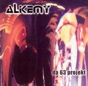

Home Artist links Label link

Alkemy - Da 63 Projekt
| Artist: | Alkemy |
| Title: | Da 63 Projekt |
| Label: | Unicorn UNCR-5012 |
| Length(s): | 63 minutes |
| Year(s) of release: | 2004 |
| Month of review: | [09/2004] |
Line up
Lionel Bertrand - drums, percussion
Aurelien Budynek - guitars, lead & backing vocals
Aurelie Martin - keys
Philippe Sifre - bass, backing vocals
Tracks
| 1) | Underwater | 6.08
|
| 2) | Turtle Soup | 5.56
|
| 3) | On The Very Day | 5.07
|
| 4) | Sick Seekers | 6.28
|
| 5) | Leaving Future (part 1) | 2.46
|
| 6) | Leaving Future (part 2) | 6.18
|
| 7) | Within My Prism | 6.32
|
| 8) | First Person Dreamer | 5.25
|
| 9) | Different Looks | 5.21
|
| 10) | Inner Pulse | 5.24
|
| 11) | My Eyes | 8.00
|
Summary
The music
Alkemy is pretty much a prog metal oriented band. The guitars might not always be as hard as on regular prog metal, but the structures are there alright. The vocals are strong, at times a bit hoarse even. A lot of the tracks have prominent guitar solos leaning towards hardrock.
The first couple of tracks have a few twists and turns that manage to keep the attention. As time moves on, however, these twists turn out to be almost all the same, thus merging the tracks into a succession of style repeats. Sure, there are some sounds and bits that jump out, but at the end of the day the music becomes a bit of a drone in which style appears to prevail over melody.
The first minute and a half of Within My Prism is quiet tockling on the guitar, making for a change, but as the track opens up we move where we've been before.
Conclusion
I have to constantly drag my attention back to this album, it won't stay. This alone says a lot. The self similarity of the songs is in a way reminiscent of Enchant, but this album lacks the sort of intricacy found with said band. The overall result is an album that is of no great interest.
© Roberto Lambooy